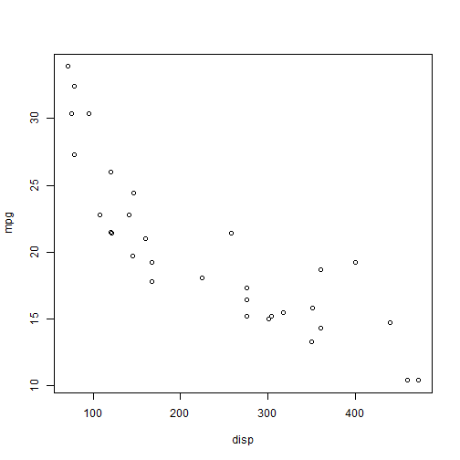

NA
#Course Project Shiny Application and Reproducible Pitch
##by ezwanderis
#Course Project Shiny Application and Reproducible Pitch
##by ezwanderis
##Overview
This slides is a part of a deliverable for the course Developing Data Products as part of the Coursera Data Science Specialization.
The Shiny app is avalilable at: https://ezwanderis.shinyapps.io/CarSelection/
Source code for ui.R and server.R files are available on the GitHub repo: https://github.com/ezwanderis/data-product/
##Web Application functionality
The sites is providing a tools for to select the best car for your trip.
We required you provide your trip detail like distance of your trip and the price od gasoline in your region, it's needed to calculate the Gasoline Expenditure for each car. Next with provide your budget on gasoline, so we can filtered and show the car with has Miles per Gallon(MPG) that below your budget.
Second, you can choose your desire cars characteristic in term of : Cylinders, Displacement, Horse Power and Transmission.
The result contains filters selected cars will show in a table on the main content with using the mtcars dataset from [R].
##MTCARS Dataset The data used in the app comes from the Motor Trend Car Road Tests (mtcars) dataset. Let has a look on the mtcars's summary
## mpg cyl disp hp
## Min. :10.40 Min. :4.000 Min. : 71.1 Min. : 52.0
## 1st Qu.:15.43 1st Qu.:4.000 1st Qu.:120.8 1st Qu.: 96.5
## Median :19.20 Median :6.000 Median :196.3 Median :123.0
## Mean :20.09 Mean :6.188 Mean :230.7 Mean :146.7
## 3rd Qu.:22.80 3rd Qu.:8.000 3rd Qu.:326.0 3rd Qu.:180.0
## Max. :33.90 Max. :8.000 Max. :472.0 Max. :335.0
## drat wt qsec vs
## Min. :2.760 Min. :1.513 Min. :14.50 Min. :0.0000
## 1st Qu.:3.080 1st Qu.:2.581 1st Qu.:16.89 1st Qu.:0.0000
## Median :3.695 Median :3.325 Median :17.71 Median :0.0000
## Mean :3.597 Mean :3.217 Mean :17.85 Mean :0.4375
## 3rd Qu.:3.920 3rd Qu.:3.610 3rd Qu.:18.90 3rd Qu.:1.0000
## Max. :4.930 Max. :5.424 Max. :22.90 Max. :1.0000
## am gear carb
## Min. :0.0000 Min. :3.000 Min. :1.000
## 1st Qu.:0.0000 1st Qu.:3.000 1st Qu.:2.000
## Median :0.0000 Median :4.000 Median :2.000
## Mean :0.4062 Mean :3.688 Mean :2.812
## 3rd Qu.:1.0000 3rd Qu.:4.000 3rd Qu.:4.000
## Max. :1.0000 Max. :5.000 Max. :8.000
##Plot The relationship between miles per gallon (mpg) and displacement (disp) in the mtcars dataset. 